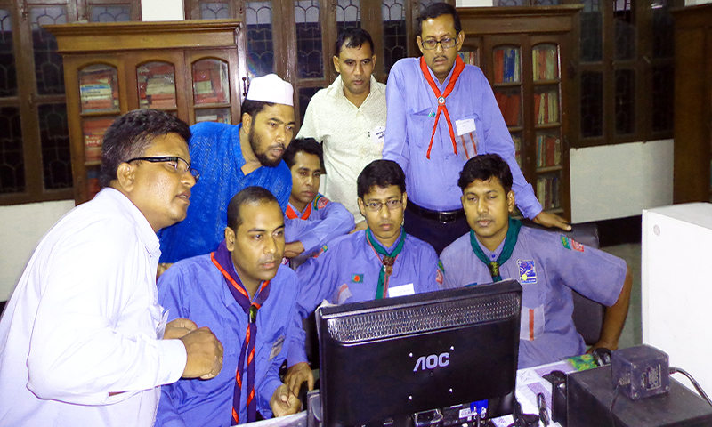

.JPG)
84
Intuitive Design + Functional Website + Rapid Support = New SuperPower
We can help you build
One Stop Ecommerce & Website Design service
0
Our Projects
The word project comes the Latin word projectum from the Latin verb proicere, "before an action" which in turn comes from pro-, which denotes precedence, something that comes before something else in time (paralleling the Greek πρό) and iacere, "to do". The word "project" thus actually originally meant "before an action". When the English language initially adopted the word, it referred to a plan of something, not to the act of actually carrying this plan out. Something performed in accordance with a project became known as an "object".Every project has certain phases of development.
0
Our Students
A student (also pupil) is a learner, or who attends an educational institution. In some nations, the English term (or its cognate in another language) is reserved for those who attend university, while a schoolchild under the age of eighteen is called a pupil in English (or an equivalent in other languages), although in the United States and in Australia a person enrolled in grades K–12 is often called a student. In its widest use, student is used for anyone who is learning, including mid-career adults who are taking vocational education or returning to university, or younger researchers or artists learning from a more experienced (and usually older) colleague and mentor.
0
Our CLients
A client is a piece of computer hardware or software that accesses a service made available by a server. The server is often (but not always) on another computer system, in which case the client accesses the service by way of a network. The term applies to programs or devices that are part of a client–server model.
Here at Webs, we are passionate about small business marketing. And while Webs’ family of products offers the tools small business owners need for great online marketing, we know that sometimes tools alone are not enough. Sometimes, you also need the instructions.
Here at Webs, we are passionate about small business marketing. And while Webs’ family of products offers the tools small business owners need for great online marketing, we know that sometimes tools alone are not enough. Sometimes, you also need the instructions.



{kind=link}